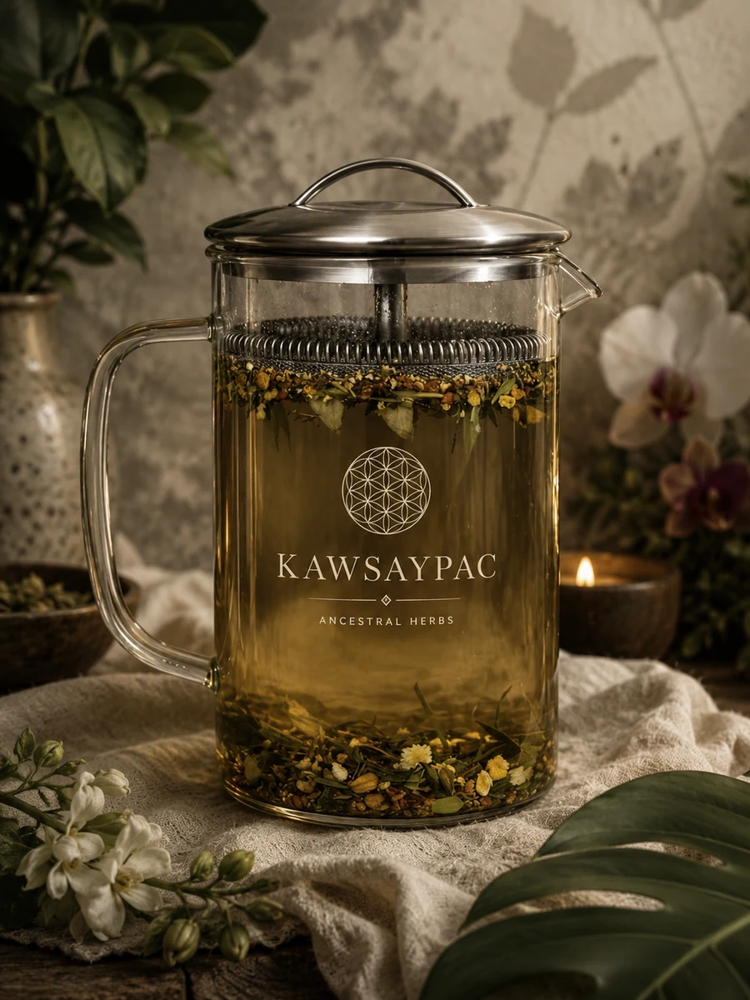
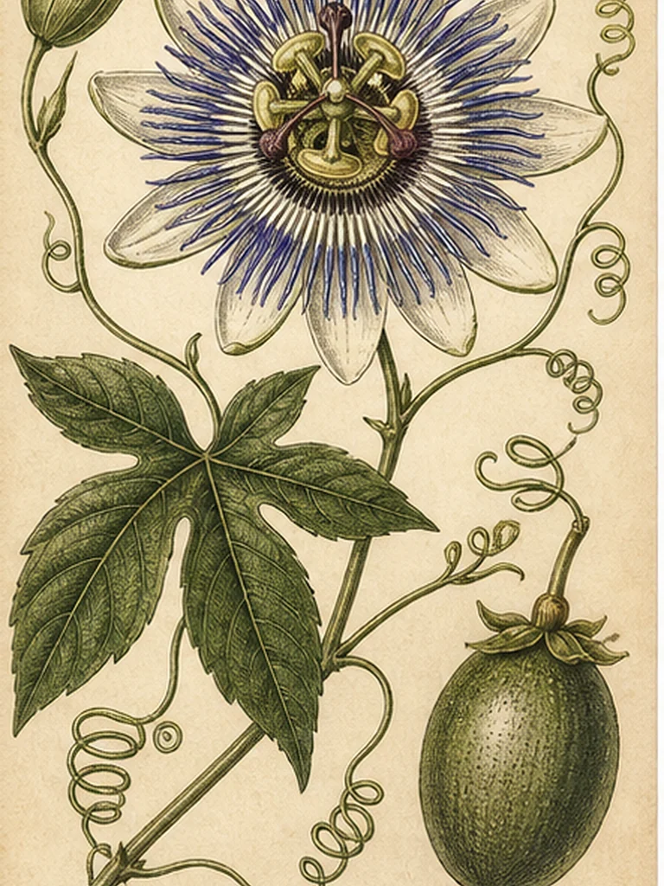

Infusion
An infusion is what most people call tea: pouring hot water over delicate herbs like leaves and flowers and allowing them to steep. It works well for softer plant material.
Preparing Your Herbs
So you have got herbs. Now what?
This page is your guide. Whether you are brewing your first cup or deepening your daily ritual, everything you need to prepare, store, and get the most from your herbs is right here. Because the way you prepare your medicine matters just as much as what you choose to take.

Before You Brew
Before you begin any herbal protocol, it is worth understanding that what you put in your body, and how you live in your body, determines how far these plants can go. Herbs are amplifiers. The cleaner the foundation you give them, the deeper and faster they work.
That means what you eat, how much you sleep, how you manage stress, and how well you hydrate all play a direct role in your results. A cup of Cat's Claw in a body running on processed food, poor sleep, and chronic stress will not reach the same depth as that same cup in a body that has been intentionally prepared to receive it.
We have created a dedicated guide to help you prepare your body before and during your herbal protocol, covering what to eat, what to avoid, how to hydrate, and how to support your nervous system so your herbs can do what they were designed to do.
Read: How to prepare your bodyInfusion vs. Decoction
First, we want to ensure you understand that not all herbs are prepared the same way. Understanding the difference sets you up for the best results.
An infusion is what most people call tea: pouring hot water over delicate herbs like leaves and flowers and allowing them to steep. It works well for softer plant material.
A decoction is what we use for all barks, roots, and tougher plant material, which require longer exposure to heat to release their full medicinal compounds. You bring the water and herbs to a boil together, then reduce to a low simmer with the lid on. This is the method the indigenous communities of the Amazon and Andes have always used. It isn't a shortcut. It's THE protocol.
How To Prepare Your Herbs
Single serving instructions are for one cup. Big batch instructions yield approximately 4 servings and can be stored in a sealed glass jar in the fridge for up to 4 days.
Always reheat before drinking, these herbs are designed to be consumed warm.

Leaves, flowers, and delicate blends, steeped gently
Our herbs include
Directions
Bring 2 cups of water to a gentle boil (never roiling boil). Add 1 heaping tablespoon of your herbs. Turn heat off, cover, and steep for 15 to 30 minutes. Strain and drink warm.
These herbs and blends are best prepared by turning the heat off before steeping. This preserves their more delicate active compounds. Single serving instructions only, these are best made fresh or in smaller batches.

Barks, roots, and dense plant material, simmered low and slow
Our herbs include
Directions (Single Serving)
Bring 2 cups of water to a boil. Add 1 heaping tablespoon of your herb. Reduce to low, cover, and simmer for 30 minutes. Strain and drink warm.
Directions (Big Batch)
Bring 5 cups of water to a boil. Add 1/4 cup of your herb. Reduce to low, cover, and simmer for 30 minutes. Strain and store in a glass jar in the fridge. Makes roughly 4 cups.
These herbs and blends require sustained heat to release their full medicinal compounds. Big batch instructions are included for these since the longer prep time makes it worth brewing ahead.
The Finishing Touches
You can absolutely combine herbs and some of our blends were built around exactly that principle. A few guidelines:
Some herbs are naturally bitter or earthy. Here is how to make your cup more enjoyable without disrupting your health goals:
Avoid refined sugar, it works against the herbs, particularly for hormonal and blood sugar support blends.
Iced tea
Let your brewed cup cool completely and serve over ice. Bowel Balance, Sacred Sacral, and Guayusa are especially delicious chilled.
Smoothies
Add a cup of chilled Guayusa brew to your morning smoothie for a clean natural energy boost. Pairs beautifully with banana, cacao, and almond milk.
Steam inhalation
For Matico and One Way Out, pour a freshly brewed hot cup into a bowl, drape a towel over your head, close your eyes, and inhale deeply for 5 to 10 minutes. The antimicrobial and bronchodilating compounds travel directly into your airways.
Timing & Duration

Yes, once. After the first brew your herbs still hold residual compounds worth extracting. Add them to a fresh pot with half the original water amount and simmer or steep again for the same amount of time. The second brew will be lighter but still beneficial. After two uses, compost them, they have given what they have to give.
Frequently Asked Questions
Yes. Many customers drink multiple herbs as part of their daily protocol. Follow the timing guide above so each herb is taken at its optimal time and not competing with digestion or other herbs simultaneously.
We do not recommend most herbs during pregnancy or breastfeeding without consulting your doctor or midwife first. Several herbs in our catalog have traditional uses as uterine stimulants or have not been studied for safety in pregnancy. Always consult your healthcare provider before beginning any herbal protocol.
Most of our herbs are formulated for adults. Bowel Balance is one of the gentler blends and fennel has shown safety for infant colic in published studies, but we recommend consulting a pediatrician before introducing any herb to a child under 12.
Simply continue your protocol the following day. Do not double up doses to compensate for a missed day. Consistency over time matters more than perfection.
Some herbs interact with medications, particularly blood thinners, blood pressure medication, immunosuppressants, and hormonal medications. Always consult your doctor before adding any herbal protocol alongside prescription medication.
Yes, for your decoctions. We recommend brewing your barks and roots at the start of each week. Each batch keeps in a sealed glass jar in the fridge for up to 4 days. Label each jar clearly so you know which herb is which and when it was brewed. Infusions are best made fresh since their more delicate compounds fade faster.
Barks and roots require sustained heat to break down their dense cell walls and release their full medicinal compounds, that is why they simmer. Leaves and flowers contain more delicate active compounds that are best extracted at lower temperatures, turning the heat off and steeping preserves those compounds without destroying them.
These herbs were designed by nature and used by indigenous communities as warm medicine. Warmth aids absorption, supports digestion, and allows the compounds to enter your system more effectively. Never use a microwave, always use your stovetop to reheat your herbs.